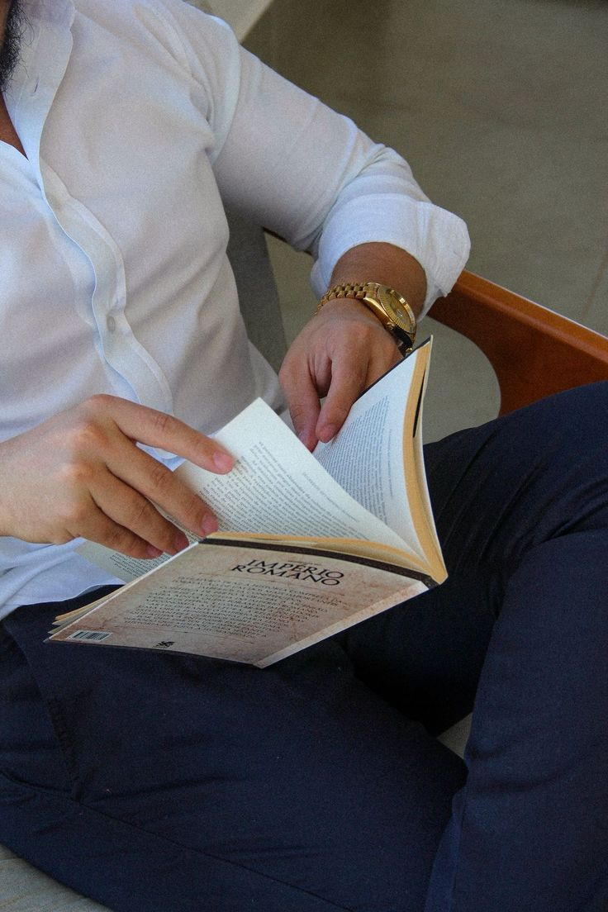

Cada conhecimento pede o seu livro.
Escolha o ponto de partida. Em todos os serviços, o autor valida o conteúdo e aprova a versão final.
Biografias e autobiografias
Uma vida, uma trajectória, um legado — registados com rigor e sensibilidade.
Descrição
Desenvolvemos a sua biografia ou autobiografia a partir de entrevistas orientadas, documentos e fotografias, preservando a sua voz e a verdade da sua história.
Problema que resolve
Há histórias que se perdem porque ninguém as escreveu. Falta tempo, método ou confiança para transformar memórias num texto coerente.
Benefício para si
Um livro profissional que preserva o seu legado para a família, a comunidade e as próximas gerações — sem ter de escrever sozinho.
Etapas de execução
- Conversa inicial e definição do âmbito
- Linha do tempo e índice aprovados
- Entrevistas orientadas e recolha de documentos
- Redacção na sua voz (1.ª ou 3.ª pessoa)
- Rondas de revisão e validação consigo
- Design de capa, paginação e produção
Livros científicos e profissionais
Para médicos, juristas, gestores e especialistas com conhecimento aplicado.

Descrição
Organizamos a sua experiência profissional numa obra estruturada, clara e credível, com apoio de pesquisa, revisão técnica consigo e cuidado com fontes e direitos.
Problema que resolve
Anos de prática geram conhecimento valioso que raramente é registado. A agenda profissional não deixa tempo para escrever com método.
Benefício para si
Autoridade reforçada entre pares, um instrumento de formação e uma contribuição duradoura para a sua área.
Etapas de execução
- Definição do tema, leitor e objectivo
- Índice detalhado e calendário
- Entrevistas técnicas ou análise dos seus materiais
- Pesquisa de apoio e redacção
- Validação técnica, anonimização e verificação de direitos
- Paginação, capa e produção final
Livros educativos e religiosos
Para professores, formadores e líderes que ensinam, orientam e inspiram.
Descrição
Transformamos aulas, formações, pregações e ensinamentos em livros com estrutura pedagógica, linguagem acessível e design cuidado.
Problema que resolve
O conhecimento transmitido oralmente chega a quem está presente. Sem registo, o alcance e a continuidade da mensagem ficam limitados.
Benefício para si
Uma obra que multiplica o seu ensino, fortalece a sua comunidade e pode ser usada em formação, escolas e igrejas.
Etapas de execução
- Conversa sobre mensagem, público e uso da obra
- Estrutura de capítulos e progressão pedagógica
- Entrevistas, transcrição de aulas ou sermões
- Redacção e organização do conteúdo
- Distinção clara entre experiência, interpretação e factos
- Design, paginação e produção
Edição e aperfeiçoamento de manuscritos
Já escreveu? Ajudamos a levar o seu texto ao nível profissional.

Descrição
Diagnóstico editorial, reorganização da estrutura, revisão linguística, edição de conteúdo, paginação e capa — preparando o seu manuscrito para publicação.
Problema que resolve
Um manuscrito com bom conteúdo pode perder força por falhas de estrutura, repetições, erros ou apresentação amadora.
Benefício para si
O seu texto, mais claro e coeso, com apresentação ao nível das melhores editoras — e a autoria continua a ser inteiramente sua.
Etapas de execução
- Recepção e diagnóstico do manuscrito
- Relatório com recomendações
- Reorganização e edição de conteúdo
- Revisão ortográfica e linguística
- Validação das alterações consigo
- Paginação, capa e ficheiros para impressão
Documentação institucional e empresarial
Para empresas, organizações e instituições que querem preservar e transmitir o que sabem.
Descrição
Estamos a preparar uma unidade dedicada a organizar, documentar e transmitir o conhecimento das organizações. Aceitamos manifestações de interesse para projectos-piloto.
Problema que resolve
Uma organização pode ter décadas de actividade sem documentação da própria experiência. Quando os funcionários antigos saem ou o fundador se afasta, parte do conhecimento perde-se.
O que poderemos entregar
| História empresarial | Livro sobre a origem, evolução e conquistas. |
|---|---|
| Memória institucional | Registo de acontecimentos, decisões e marcos. |
| Manual de procedimentos | Como cada departamento executa as suas actividades. |
| Conhecimento dos fundadores | Experiências, decisões e critérios estratégicos. |
| Cultura organizacional | Valores, princípios e identidade da organização. |
Etapas previstas
- Diagnóstico das necessidades
- Mapa do conhecimento a documentar
- Entrevistas com fundadores e equipas
- Redacção e organização
- Validação pela organização
- Design e entrega
Vamos desenvolver o seu projecto?
Não tem a certeza do serviço certo? Faça a avaliação inicial ou fale directamente connosco.